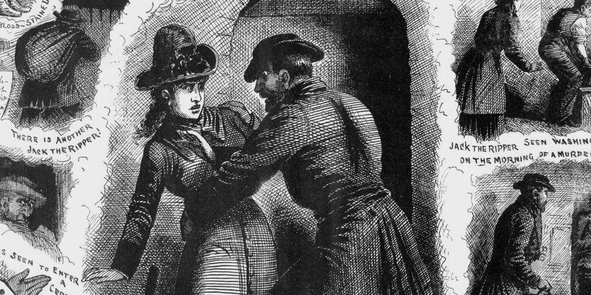

A figura conhecida como Jack, o Estripador (Jack The Ripper, em inglês) matou, no mínimo, três prostitutas, disseminou o pânico pelas ruas do pobre distrito de Whitechapel, ganhou descrições monstruosas nos jornais e desafiou investigadores de duas forças policiais. Mesmo assim, após 2 mil entrevistas, 300 suspeitas e 80 detenções empreendidas pela polícia, ninguém sabe exatamente o que ele (ou ela) fez.
